Line charts are designed for ordered data, especially time. They work best when the x-axis has a meaningful sequence and the line connects observations that should be read as a path.
We will begin with GDP per capita over time in Gapminder.
ggplot(data = gapminder, mapping =aes(x = year, y = gdpPercap, group = country)) +geom_line(alpha =0.25) +labs(title ="GDP per Capita over Time",subtitle ="One line per country",x ="Year",y ="GDP per capita",caption ="Source: Gapminder." ) +theme_minimal()
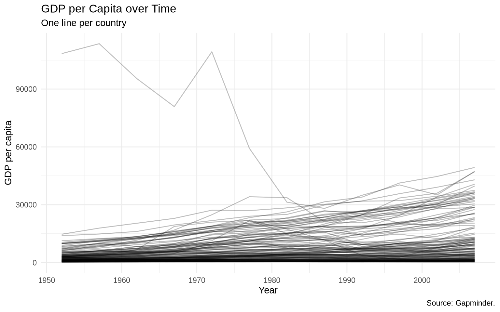
This plot has too many lines in one panel. We can separate continents with facets.
ggplot(data = gapminder, mapping =aes(x = year, y = gdpPercap, group = country)) +geom_line(alpha =0.25) +facet_wrap(~ continent) +labs(title ="GDP per Capita over Time",subtitle ="One line per country, faceted by continent",x ="Year",y ="GDP per capita",caption ="Source: Gapminder." ) +theme_minimal()
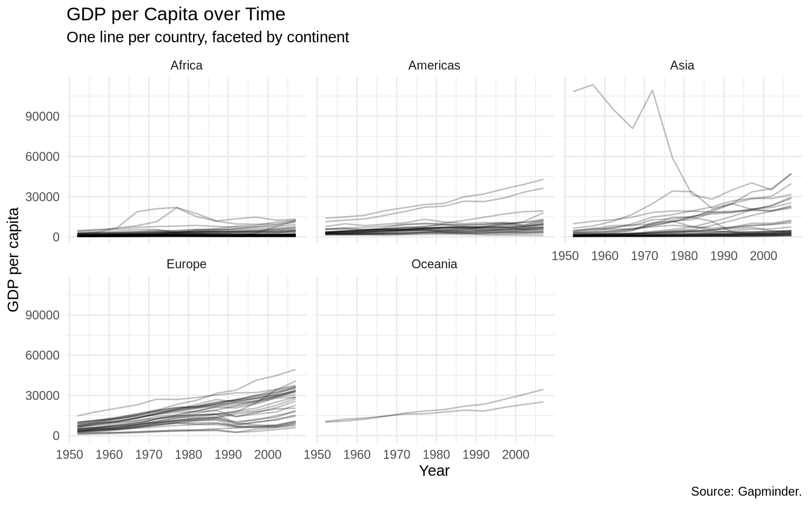
Kuwait is an extreme case in this dataset. A log scale makes the vertical comparison easier.
ggplot(data = gapminder, mapping =aes(x = year, y = gdpPercap, group = country)) +geom_line(color ="gray70", alpha =0.7) +geom_smooth(mapping =aes(group = continent),method ="loess",formula = y ~ x,se =FALSE,linewidth =1 ) +scale_y_log10(labels =dollar_format(accuracy =1)) +facet_wrap(~ continent, ncol =5) +labs(title ="GDP per Capita on Five Continents",subtitle ="Gray lines are countries; smooth lines summarize continent trends",x ="Year",y ="GDP per capita",caption ="Source: Gapminder." ) +theme_minimal() +theme(axis.text.x =element_text(angle =90, vjust =0.5))
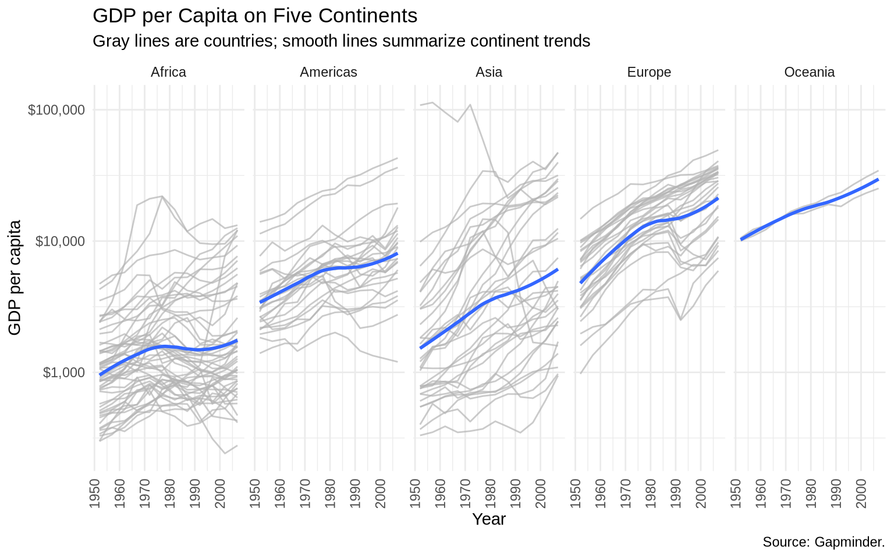
7.2 Working with dates
Some datasets store time as actual dates. Others store years as numbers. The lubridate package helps convert text or numeric values into date objects.
make_date(2026)
[1] "2026-01-01"
ymd(c("2009-01-02", "2009 01 03", "Created on 2009 1 6"))
ggplot(data = state_policy_panel, mapping =aes(x = year, y = unemploy, group = st)) +geom_line(color ="gray75", alpha =0.7) +geom_line(data = state_policy_panel |>filter(st =="MI"),color ="black",linewidth =1.6 ) +labs(title ="Michigan Unemployment in Context",subtitle ="Other states provide context",x ="Year",y ="Unemployment rate",caption ="Source: State policy data." ) +theme_minimal()
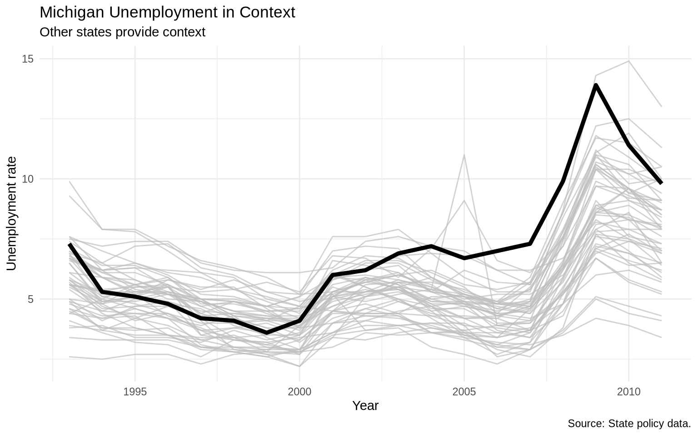
The plot above identifies Michigan visually but not by name. Chapter 8 returns to manual direct labels in a fuller workflow. Here, the shorter option is gghighlight().
The gghighlight package automates highlighting and direct labeling when the highlighting rule can be stated as a logical condition.
ggplot(data = state_policy_panel, mapping =aes(x = year, y = unemploy, color = st)) +geom_line(linewidth =0.75) +gghighlight( st =="MI",use_group_by =FALSE,label_key = st,unhighlighted_params =list(linewidth =0.3, alpha =0.5) ) +labs(title ="Michigan Unemployment in Context",subtitle ="Highlighted with gghighlight()",x ="Year",y ="Unemployment rate",caption ="Source: State policy data." ) +theme_minimal() +theme(legend.position ="none")
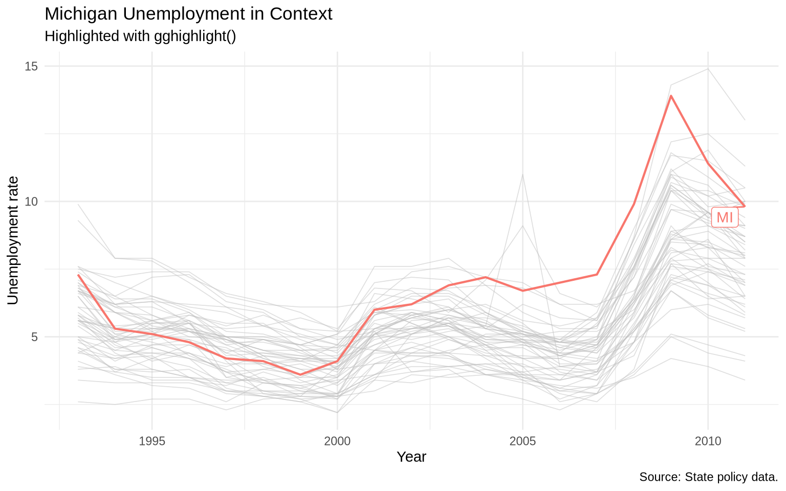
We can also highlight a set of cases. The condition can name several states with %in%.
ggplot(data = state_policy_panel, mapping =aes(x = year, y = unemploy, color = st)) +geom_line(linewidth =0.75) +gghighlight( st %in%c("IL", "IN", "MI", "OH", "WI"),use_group_by =FALSE,label_key = st,unhighlighted_params =list(linewidth =0.3, alpha =0.5) ) +labs(title ="Unemployment in Five Midwestern States",x ="Year",y ="Unemployment rate",caption ="Source: State policy data." ) +theme_minimal() +theme(legend.position ="none")
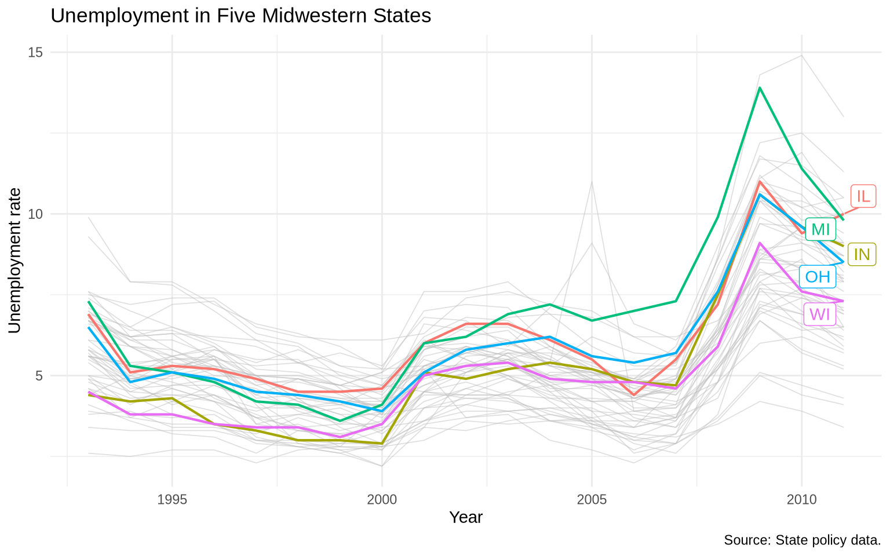
7.4 Bar charts
Bar charts are useful for comparing quantities across categories. When the data is already summarized, use geom_col().
The midwest dataset has county-level observations. To compare average college education by state, we first summarize.
ggplot(data = college_by_state, mapping =aes(x = state, y = avg_college)) +geom_col(fill ="steelblue") +labs(title ="Average College Education by Midwest State",x ="State",y ="Percent with college degree",caption ="Source: ggplot2 midwest dataset." ) +theme_minimal()
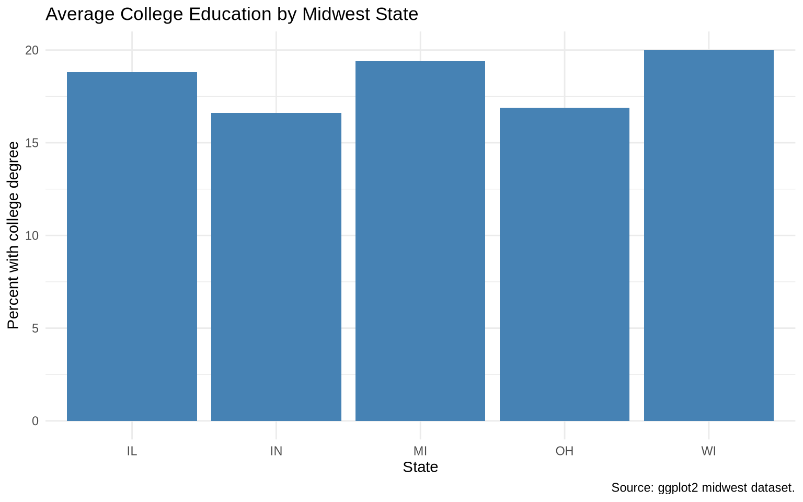
Ordering the bars by value makes comparison easier.
ggplot(data = college_by_state, mapping =aes(x =reorder(state, avg_college), y = avg_college)) +geom_col(fill ="steelblue") +scale_y_continuous(labels =percent_format(scale =1)) +labs(title ="Average College Education by Midwest State",subtitle ="Bars ordered by average",x ="State",y ="Percent with college degree",caption ="Source: ggplot2 midwest dataset." ) +theme_minimal()
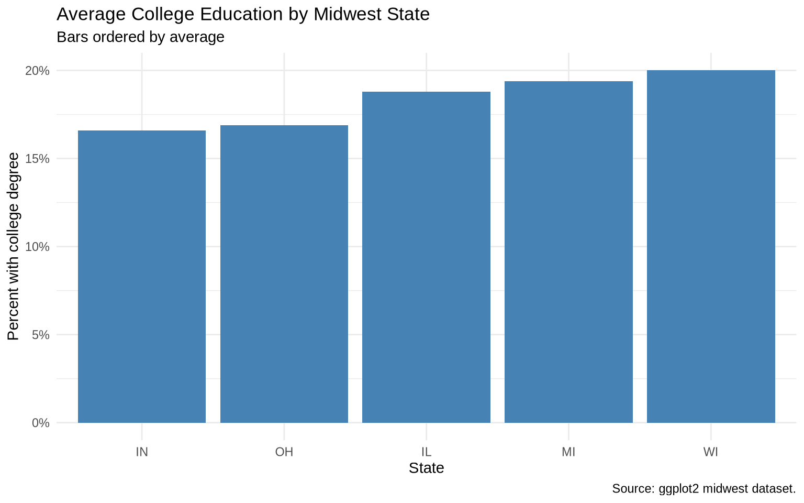
If category labels are long, coord_flip() often helps.
ggplot(data = college_by_state, mapping =aes(x =reorder(state, avg_college), y = avg_college)) +geom_col(aes(fill = state), show.legend =FALSE) +geom_text(aes(label =str_c(avg_college, "%")), hjust =-0.15, size =3.5) +coord_flip() +scale_y_continuous(labels =percent_format(scale =1), expand =expansion(mult =c(0, 0.12))) +labs(title ="Average College Education by Midwest State",x =NULL,y ="Percent with college degree",caption ="Source: ggplot2 midwest dataset." ) +theme_minimal()
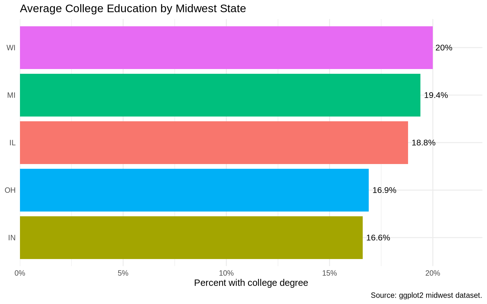
7.5geom_col() versus geom_bar()
Use geom_col() when you already have the heights of the bars.
Use geom_bar() when you want ggplot2 to count rows.
ggplot(data = midwest, mapping =aes(x = state)) +geom_bar(fill ="gray45") +labs(title ="Number of Counties by State",x ="State",y ="Number of counties",caption ="Source: ggplot2 midwest dataset." ) +theme_minimal()
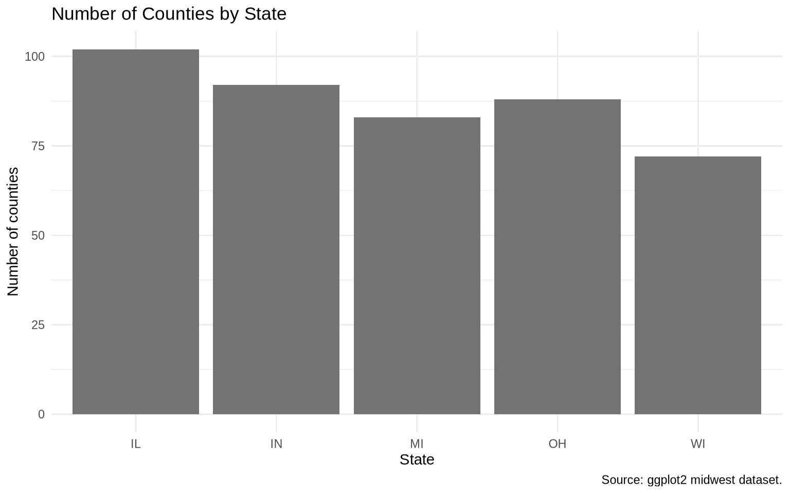
Here, no y variable is mapped. geom_bar() counts the number of rows in each state.
7.6 Dodged bars
Dodged bars place bars side by side within each category. Here we compare metro and non-metro counties within states.
ggplot(data = midwest, mapping =aes(x = state, fill =factor(inmetro))) +geom_bar(position ="dodge") +scale_fill_manual(values =c("0"="coral", "1"="navy"),labels =c("0"="Non-metro", "1"="Metro") ) +labs(title ="Metro and Non-Metro Counties by State",x ="State",y ="Number of counties",fill ="County type",caption ="Source: ggplot2 midwest dataset." ) +theme_minimal()
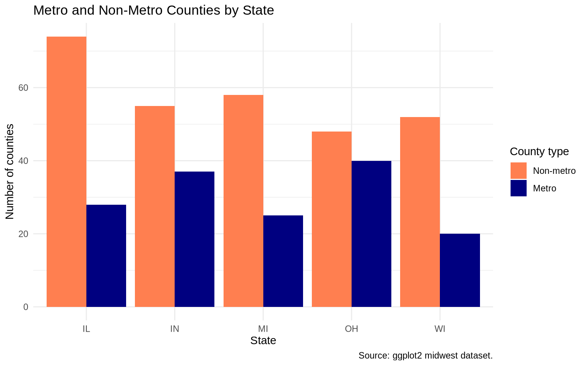
Adding labels to dodged bars requires the text to use the same dodging.
ggplot(data = midwest, mapping =aes(x = state, fill =factor(inmetro))) +geom_bar(position =position_dodge(width =0.9)) +geom_text(mapping =aes(label =after_stat(count), group =factor(inmetro)),stat ="count",position =position_dodge(width =0.9),vjust =-0.4,size =3 ) +scale_fill_manual(values =c("0"="coral", "1"="navy"),labels =c("0"="Non-metro", "1"="Metro") ) +labs(title ="Metro and Non-Metro Counties by State",x ="State",y ="Number of counties",fill ="County type",caption ="Source: ggplot2 midwest dataset." ) +theme_minimal()
7.7 Bar chart example: OECD life expectancy gap
A local copy of the oecd_sum summary lives at Data/oecd/oecd_sum.csv. Each row is one year, with columns for U.S. life expectancy, the OECD non-U.S. average, the difference, and a hi_lo indicator for whether the U.S. is above or below the average.
oecd_sum <-read_csv("Data/oecd/oecd_sum.csv", show_col_types =FALSE)ggplot(data = oecd_sum, mapping =aes(x = year, y = diff, fill = hi_lo)) +geom_col() +guides(fill ="none") +labs(title ="The U.S. Life Expectancy Gap",subtitle ="Difference between U.S. and OECD average life expectancy",x ="Year",y ="Difference in years",caption ="Data: OECD, summarized in Kieran Healy's socviz package." ) +theme_minimal()
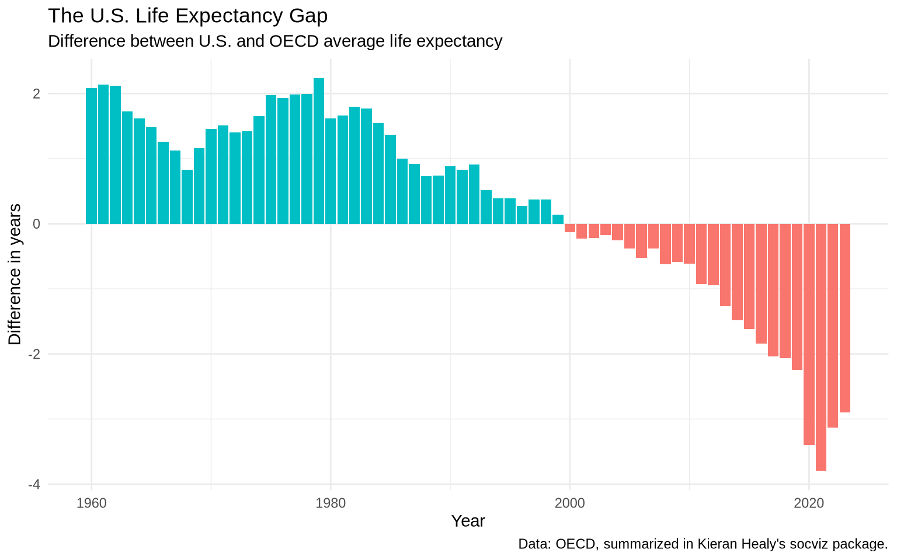
This is a bar chart because the main comparison is the size and direction of a yearly difference.
7.8 Exercise
Create an ordered bar chart from a summarized dataset.
Use midwest.
Group by state.
Calculate the median of percollege.
Make an ordered geom_col() chart.
Add value labels.
Remove any redundant legend.
# Write your plot here.
7.9 Extra: slopegraphs
Slopegraphs compare the same units at a small number of time points. They are especially useful when the start and end values matter more than the intermediate path. The form was popularized by Edward Tufte in The Visual Display of Quantitative Information, but the design predates him by a century.
A generic Tufte-style slopegraph:
Tufte slopegraph illustration
Ben Fry’s slopegraph of baseball salary per win:
Baseball slopegraph by Ben Fry
And one from Scribner’s Statistical Atlas of the United States in 1883, well before the modern term existed:
Scribner’s Statistical Atlas, 1883
Unlike a traditional line chart, a slopegraph emphasizes the start and end values of each unit, so change is read as the slope of a line rather than as a path through many points.
The states table is a local snapshot of Correlates of State Policy data, originally fetched with cspp::get_cspp_data(). polconserv is policy conservatism (the negation of pollib_median), so larger values mean a more conservative policy environment.
states <-read_csv("Data/state_policy/cspp_states.csv", show_col_types =FALSE)library(ggslopegraph)ggslopegraph(dataframe = states |>mutate(year =as.character(year)) |>filter(year %in%c("1980", "1990", "2000", "2010"), region.name =="midwest"),Times = year,Measurement = polconserv,Grouping = st,Title ="Tufte-style Slopegraph of Policy Conservatism",SubTitle ="Midwest, 1980-2010",Caption ="Source: Correlates of State Policy via the cspp package.")
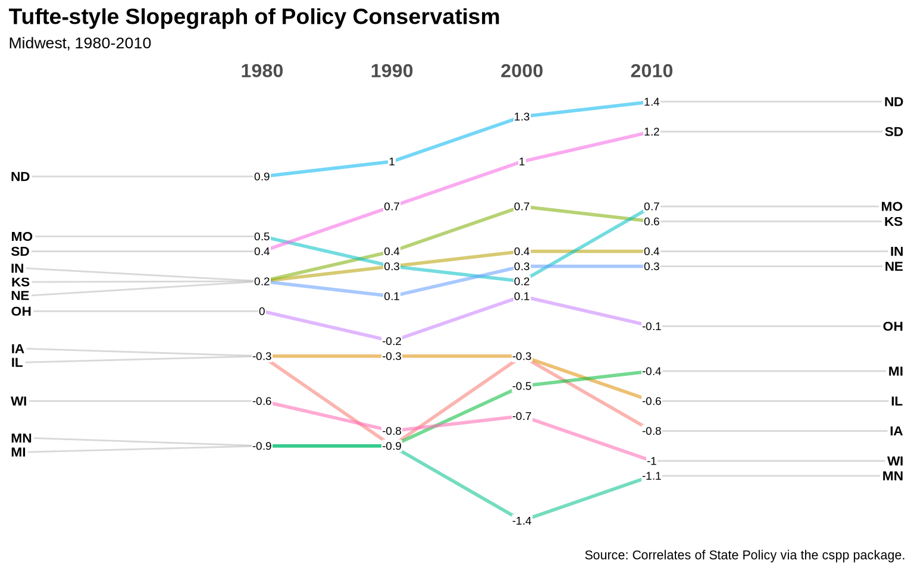
ggslopegraph() requires the Times column to be a character or factor, which is why year is converted before filtering. If ggslopegraph is not available, the same plot can be built with plain geom_line() and geom_text().